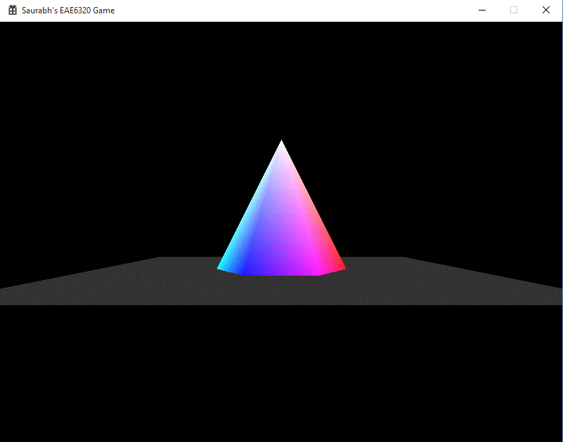

This assignment we finally changed the colorful 2D objects into colorful 3D objects. We also added the concept of camera so that we can change the perspective of the game world which we view. To make this possible and visibly believable, we had to make a series of changes to the code. Although there were mostly small changes, I will explain more of the high level concepts involved in the process. You can see the output of the assignment to the right. It is something extra than the cube required by the assignment, it is a hexagonal pyramid, with the bottom face being a regular hexagon with the colors of the color palette.

All the objects which we author are in a neutral position, i.e. centered around the origin and the bottom face on the XZ plane. If we populate our game world with all these objects, all the objects would be at the origin. To move them, we use the Local-To-World transformation matrix to move those objects in relation to the actual location in the game world. This is calculated on basis of the object’s position and the orientation.
cMatrix_transformation(cQuaternion i_orientation, cVector i_position);
If we display the objects as is in the game world, we would only see some of the objects and in a static, constant view. But we want to look around. We introduce the concept of a camera. Initially, without the matrix, we can assume the camera to be positioned at the origin and pointed towards positive Z. To move the perspective from the world space, we use the World-To-View transformation matrix. It is calculated with the camera’s position and its orientation.
CreateWorldToViewTransform( const cQuaternion& i_cameraOrientation, const cVector& i_cameraPosition )
Till now we have only considered what happens in the virtual game world. Now we have to consider what happens when we start displaying the world on a window on the screen. In the game world, moving a unit in any direction is the same distance. But when drawing on a screen, the width and height of the window might not be equal. Hence we introduce the concept of Aspect Ratio. This normalizes all the distances in different axes with this ratio. Popular aspect ratios are 4:3 (800x600, 1024x768, 1280x960), 16:9(1920x1080) and 14:9(1400x900). Also we don&rsq;t need to display all the objects behind the camera or too far away from the camera. So we use the concept of near and far plane. Anything between the near plane and the far plane will be rendered. For all this, we use the View-To-Screen transformation matrix. It is calculated as follows:
CreateViewToScreenTransform( const float i_fieldOfView_y, const float i_aspectRatio, const float i_z_nearPlane, const float i_z_farPlane )
A common algorithm in rendering is the Painter’s Algorithm. It states that the object in the back of the scene should be rendered first. This algorithm would cause some problems, if the condition in the image is satisfied. If we draw the plane first, the intersection will not occur and the pyramid will be on top of the plane, which is undesirable. This is remedied by the Z buffer aka Depth Buffer. It is series of 8, 16, 24 or 32 bit values, for each of the pixels on the screen. Every time a pixel is processed, its Z coordinate, or its depth, is stored in this buffer. If we want to draw any pixel on the same X and Y coordinates, if the new depth is less than the stored depth, then the pixel is redrawn. These Z coordinates are rescaled to be stored in the range 0 to 1. Since, 1 is the farthest, if we clear the depth buffer to 1, any pixel which is checked for the first time, will pass the test and will be drawn.
Adding an extra coordinate in the text mesh file is easy. While reading, from the binary file, now the size of sVertex array is 16 bytes. So the 4 bytes from offset 8, at every 16 byte interval for number of vertices is the newly added Z value. All the Z values are highlighted in the hex image. The first set of images is the floor mesh. The next set of images is the pyramid mesh file.
I have added Camera class in the Core Engine project:
class Camera
{
public:
Math::cVector Position;
Math::cQuaternion Orientation;
float AspectRatio;
Camera() {}
};
An instance of the Camera is created in Game. It stores the position, orientation and the aspect ratio. These values are passed to the SetTransformations function of the Renderable in the Graphics project, in order to calculate the matrices. The relevant code can be seen below:
void SetTransformations(Math::cVector i_Position, Math::cQuaternion i_Orientation,
I planned to add the complete first person camera, with being able to look around. But my inexperience with Quaternions, caused me to not to finish the looking around part. So now you can move the camera around but not change the orientation. Hopefully, by the next assignment, I would have a better grasp of Quaternions.
Math::cVector i_CameraPosition, Math::cQuaternion i_CameraOrientation, float AspectRatio);
Time Estimate
Reading: 1 hour
Coding: 5 hours
Debugging: 1 hour
Writeup: 1 hour
Download Links
Download Direct3D
Download OpenGL